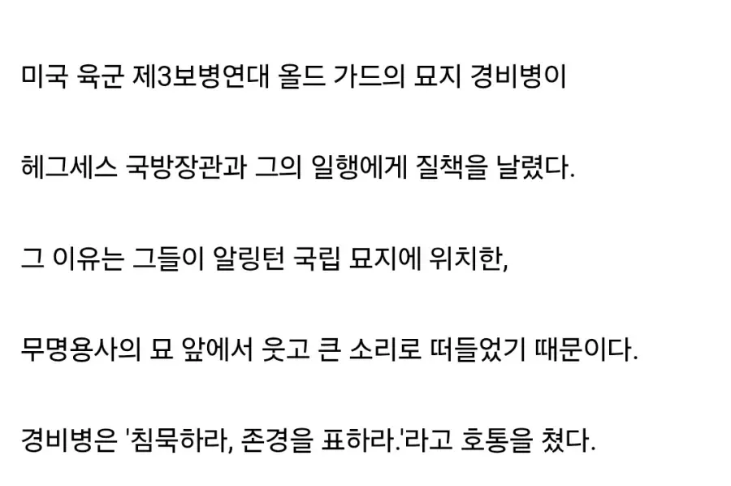

저새끼는 시발 바다 건너 사람이 아는 상식도 없는 새끼인가.
영상도 같이 쪄와야지
역시나 병신 같은 트럼프 정부요인이라서 그런가 자책보다도 대원한테 손가락질부터 날림
https://n.news.naver.com/mnews/article/055/0001402454?sid=104
https://www.youtube.com/shorts/HeM7H6CRGtQ
???:지금 소리치신분 관등성명이 어떻게 돼..?
실제로 호통친 경비병 손가락으로 가르키면서 뭐라고 하던데 ㅋㅋ
늙은 경비대라서 개꼰대네 ㅋㅋ 영가드였으면 걍 넘어갔을듯
옳게된 나라면 애초에 국방장관이 현충원에서 떠들지를 않겠지
근데 여자웃음소리던데 누구일려나
무덤 : 놔둬봐 ㅋㅋ신병재밋네
저딴게 전쟁부장관?